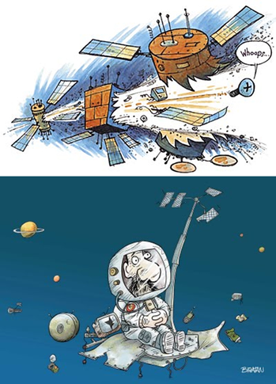

Consequências Os detritos, conforme a Nasa, viajam em elevada velocidade, o que aumenta o risco, em caso de impacto. A ação radioativa devido à exposição solar também é outro fator que preocupa, porque os materiais podem sofrer modificações. Com os experimentos exploratórios no espaço, o problema, que começou há meio século tende a piorar porque pode oferecer risco até à pesquisa. Os objetos, apesar de pequenos, oferecem riscos e cientistas norte-americanos e russos criaram um sistema de ajuste para evitar colisões e danos a equipamentos lançados ao espaço com fins exploratórios, como os satélites artificiais. Há, contudo, situações imprevisíveis.